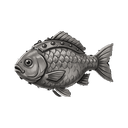
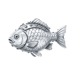
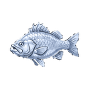
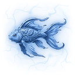
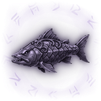
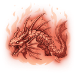

Aşçılık
| Ürün | Kademe | Taban süre | Meslek seviyesi | Bedel | Malzemeler |
|---|---|---|---|---|---|
 Bakır Usta Yemeği Bakır Usta Yemeği | T1 | 5dk 0sn | Sv 1 |  Bakır Çaçax3 Bakır Çaçax3 | |
 Demir Usta Yemeği Demir Usta Yemeği | T2 | 10dk 0sn | Sv 7 |  Demir Sazanx3 Demir Sazanx3 | |
 Çelik Usta Yemeği Çelik Usta Yemeği | T3 | 30dk 0sn | Sv 15 |  Çelik Levrekx3 | |
 Gümüş Usta Yemeği Gümüş Usta Yemeği | T4 | 57dk 9sn | Sv 23 |  Gümüş Alabalıkx3 | |
 Altın Usta Yemeği Altın Usta Yemeği | T5 | 1sa 20dk | Sv 30 |  Altın Koix3 Altın Koix3 | |
 Platin Usta Yemeği Platin Usta Yemeği | T6 | 2sa 13dk | Sv 38 |  Platin Yılanbalığıx3 | |
 Selestit Usta Yemeği Selestit Usta Yemeği | T7 | 3sa 20dk | Sv 45 |  Selestit Ton Balığıx3 Selestit Ton Balığıx3 | |
 Adamantit Usta Yemeği Adamantit Usta Yemeği | T8 | 4sa 19dk | Sv 53 |  Adamantit Köpekbalığıx3 | |
 Obsidyen Usta Yemeği Obsidyen Usta Yemeği | T9 | 5sa 42dk | Sv 60 |  Obsidyen Vatozx3 | |
 Flamerit Usta Yemeği Flamerit Usta Yemeği | T10 | 7sa 59dk | Sv 68 |  Flamerit Leviathanx3 |